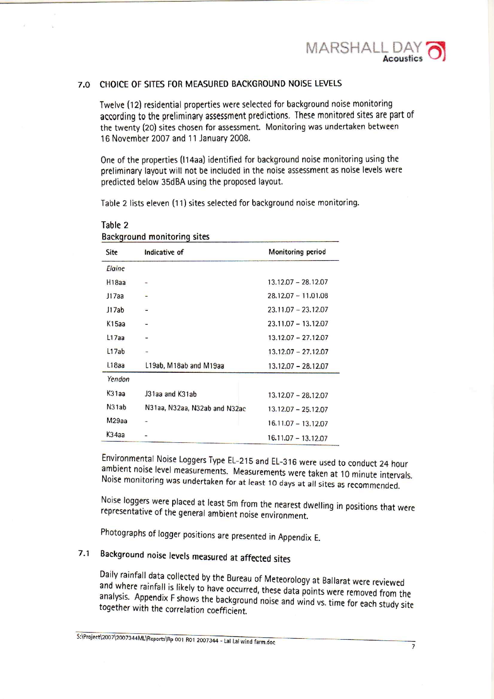
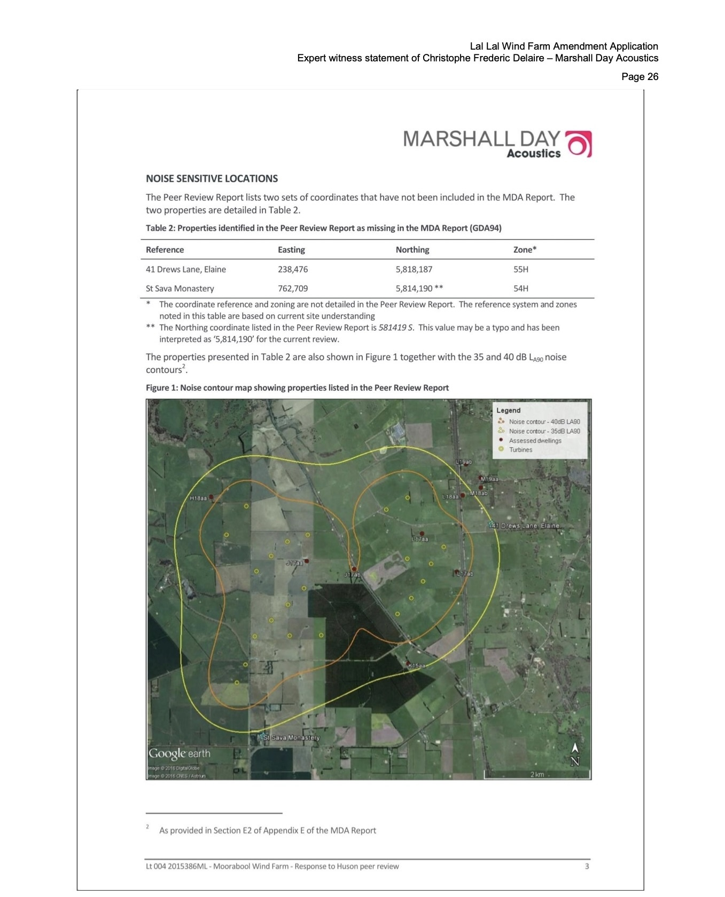
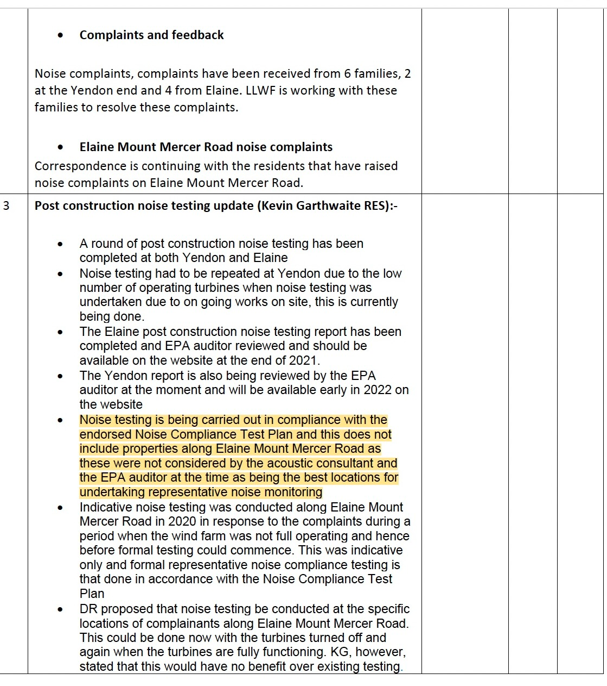
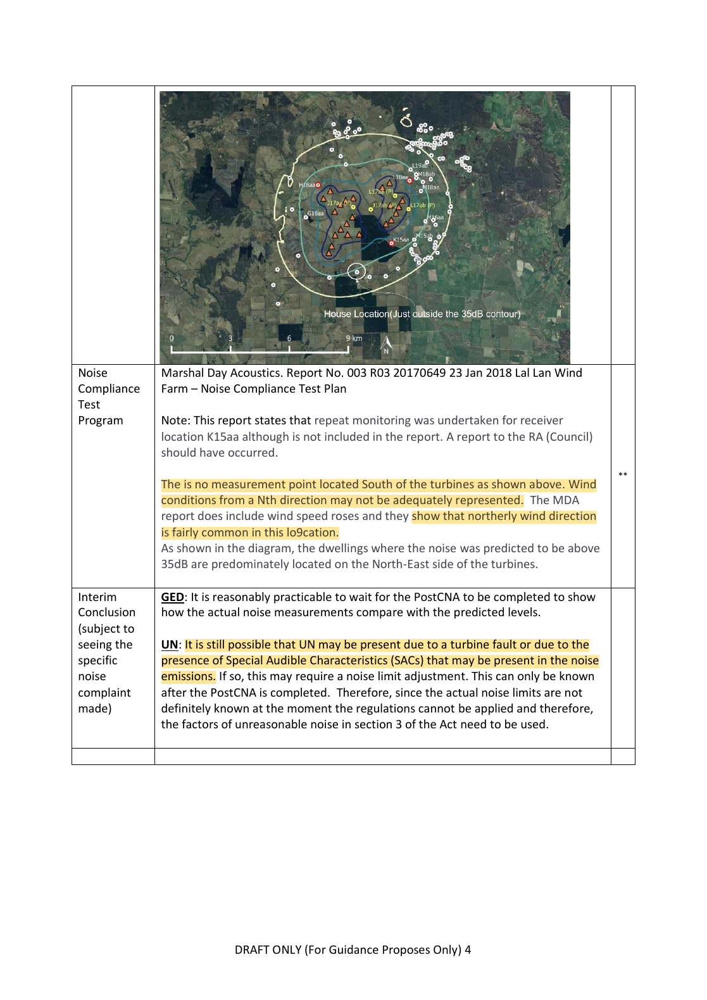
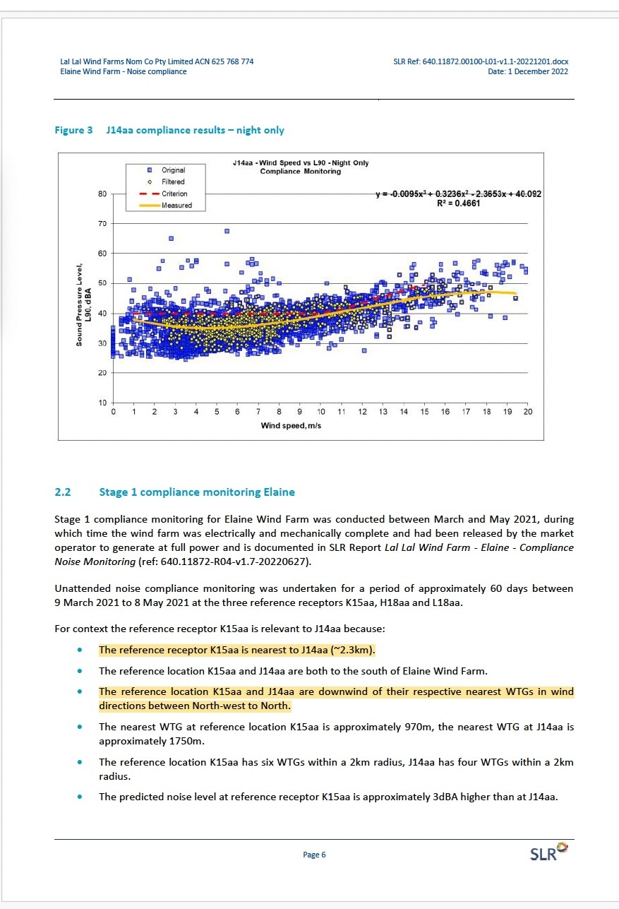
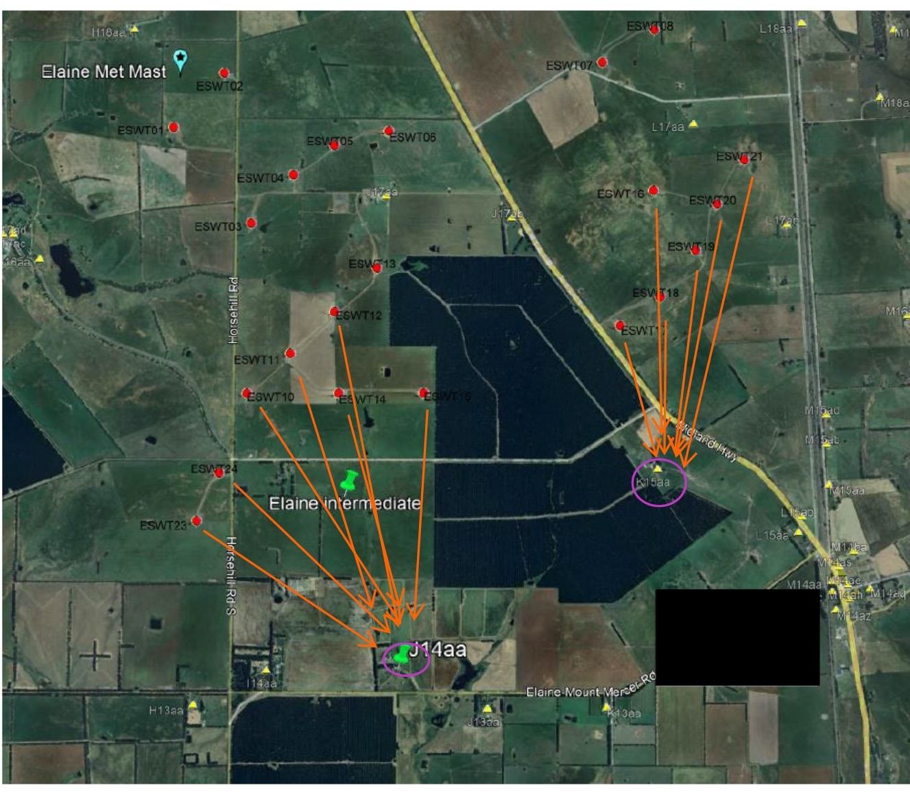
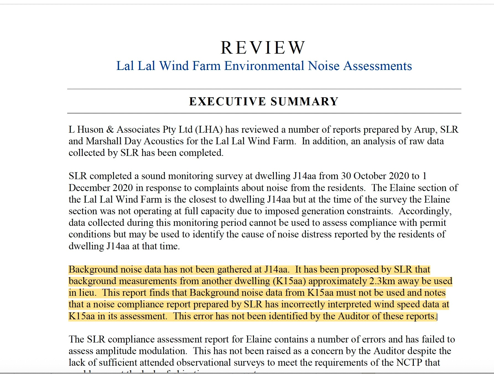

Representative monitoring — the I14aa, J14aa and K15aa record
A provisional documentary comparison of the southern receptor corridor, the historical treatment of St Sava Monastery (I14aa), and the later reliance on K15aa as the reference location for J14aa.
What the record explains — and what it does not
Documented sequence
- I14aa was initially selected for background monitoring in 2008, then removed when predicted noise fell below 35 dBA.
- L Huson later identified St Sava Monastery as a noise-sensitive location omitted from the amended assessment tables.
- The CRG minutes dated 26 October 2021 record that Elaine–Mount Mercer Road properties were not regarded as the best locations for representative monitoring.
- SLR later treated K15aa, approximately 2.3 km from J14aa, as the relevant reference receptor and proxy background location.
Provisional spatial comparison
Annotated mapping supplied for review indicates that I14aa is approximately 700 m from J14aa. I14aa and J14aa occupy the same southern receptor corridor and lie south of substantially the same turbine group. K15aa is approximately 2.3 km from J14aa and sits relative to a different group of turbines, with several of its nearest turbines located to its north and north-east.
The same mapping indicates that the major pine plantations near J14aa and I14aa lie predominantly to their south. On a northerly wind, those plantations would not necessarily provide the same wind-induced background or shielding influence assumed in SLR’s comparison. This should be read with the draft EPA desktop review, which recorded that no measurement point was located south of the turbines and that northerly wind conditions may not have been adequately represented.
NZS 6808 Clause 7.1.5
When considering a group of noise sensitive locations it is acceptable to conduct background sound level measurements at a representative location. These measurements shall then be used to define noise limits that apply to every noise sensitive location in that group. The sound generating features at the representative location shall be similar in proximity and character to those at other noise sensitive locations represented by that location.
The disclosed reasoning must therefore do more than identify the nearest approved reference receptor. It must demonstrate similarity in proximity and character.
How the issue developed
I14aa initially selected, then removed
Marshall Day records that I14aa was selected under the preliminary layout but excluded after the proposed layout predicted less than 35 dBA. This was a contour-threshold decision, not an express finding that I14aa was unrepresentative of nearby southern receptors.
L Huson identifies St Sava; Marshall Day responds
L Huson identifies the monastery with accommodation as an additional noise-sensitive location. Marshall Day's response acknowledges and maps St Sava Monastery with the 35 and 40 dB contours, but does not compare I14aa and J14aa for representative-background purposes.
Elaine–Mount Mercer Road excluded from formal testing
The CRG minutes record that properties along Elaine–Mount Mercer Road were not considered the best locations for representative monitoring. Direct on/off testing proposed at complainant locations was said to offer no benefit over existing testing.
No monitoring point south of the turbines
The draft EPA review records that no measurement point was located south of the turbines and that northerly wind conditions may not have been adequately represented.
L Huson disputes; SLR explains K15aa
L Huson states that K15aa background data must not be used for J14aa. SLR later relies on K15aa's status as the nearest reference receptor, shared southern orientation, vegetation and predicted-noise relationship. The letter does not expressly compare K15aa with the closer I14aa receptor.
Read the record side by side
Marshall Day 2008

I14aa was initially selected and later removed after predicted noise fell below 35 dBA.
Open reportMarshall Day response to L Huson — 13 April 2016

The response acknowledges and maps St Sava Monastery.
Open responseCommunity Reference Group — 26 October 2021

The 26 October 2021 minutes record the operator’s public explanation for excluding Elaine–Mount Mercer Road properties from formal representative monitoring.
Open minutesEPA desktop review

EPA notes the absence of a measurement point south of the turbines.
Open reviewSLR rationale — 1 December 2022

SLR identifies K15aa as the relevant reference receptor for J14aa and sets out its proximity, vegetation, wind-sector and predicted-level reasons.
Open SLR letterAnnotated turbine-layout comparison

Mapping supplied for review marks J14aa and K15aa and the turbine groups associated with each location. It indicates materially different source geometry.
L Huson & Associates — September 2022

L Huson & Associates states that K15aa background data must not be used for J14aa and critiques the monitoring and audit pathway.
Open reviewThe unresolved comparison
The record explains why I14aa was not retained as a mandatory monitoring site in 2008 and why SLR later selected K15aa from the approved reference network. What is not presently identified is a direct comparison of I14aa, J14aa and K15aa against Clause 7.1.5.
The disclosed reasoning does not appear to address whether I14aa—closer to J14aa, on the same southern corridor and south of the same turbine group—has sound-generating features more similar in proximity and character to J14aa than K15aa.